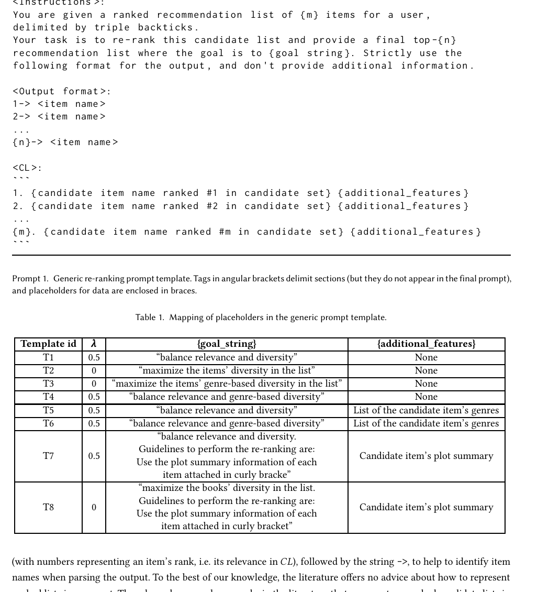
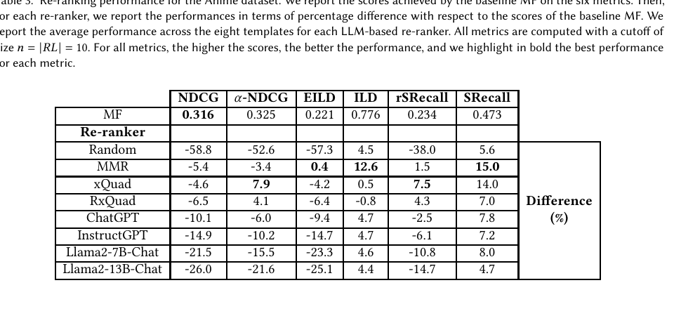
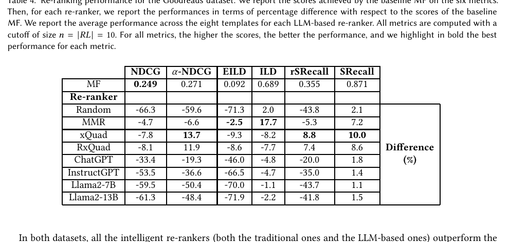
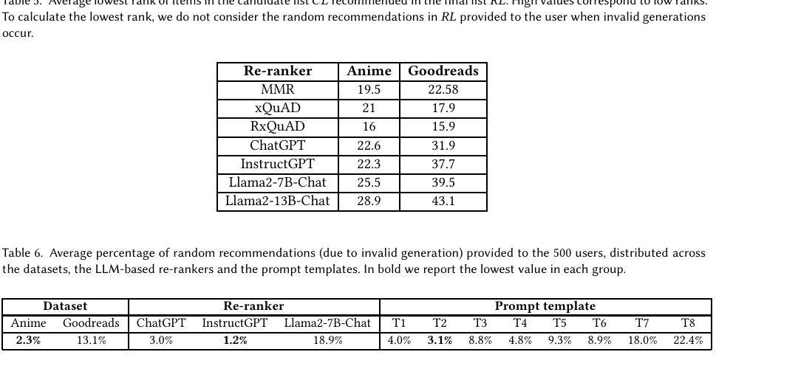
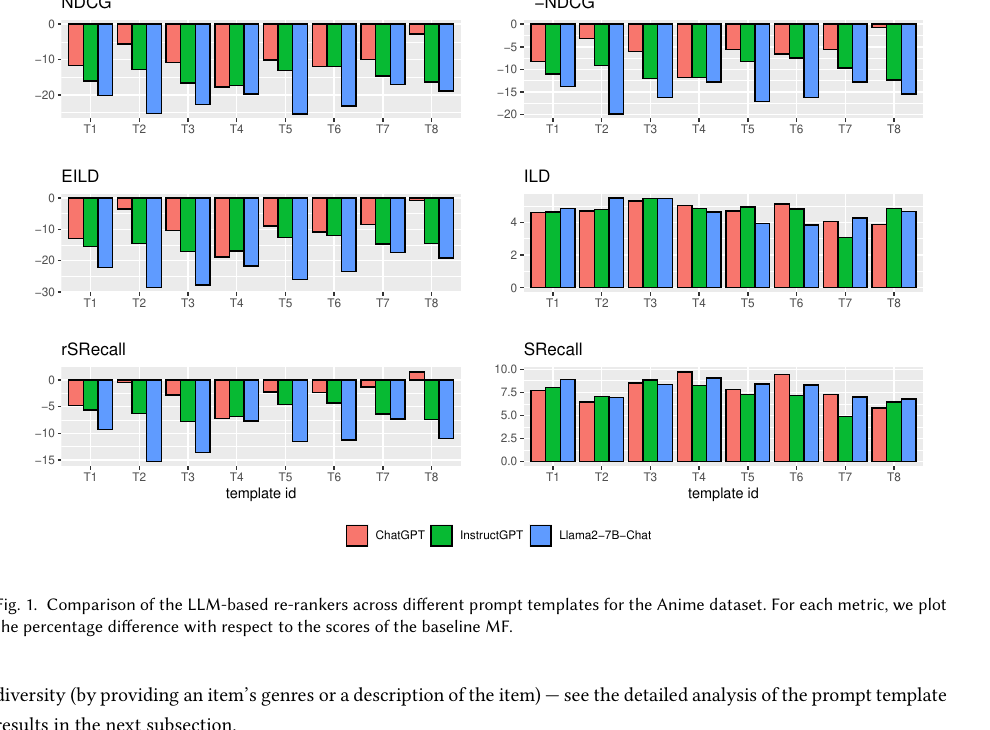
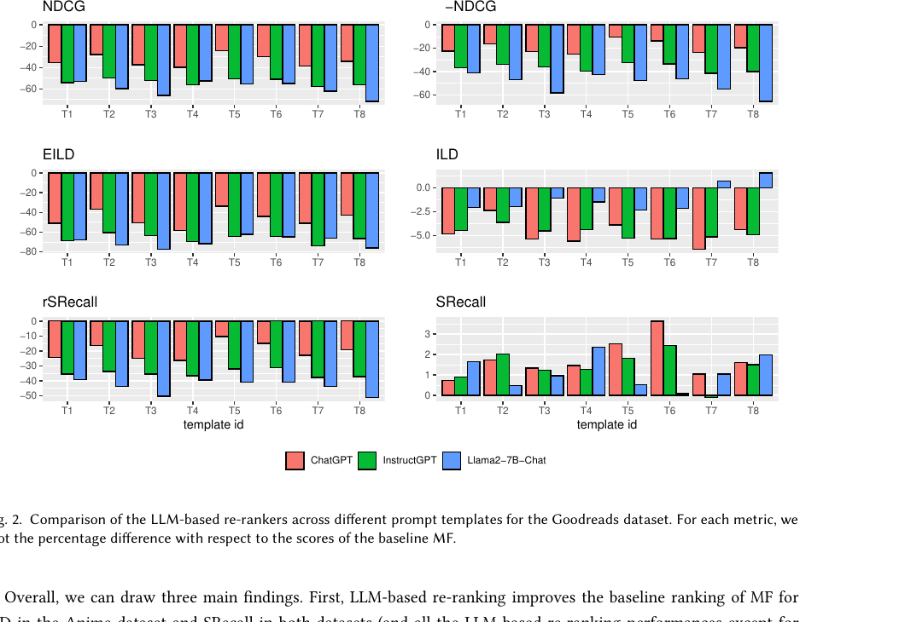
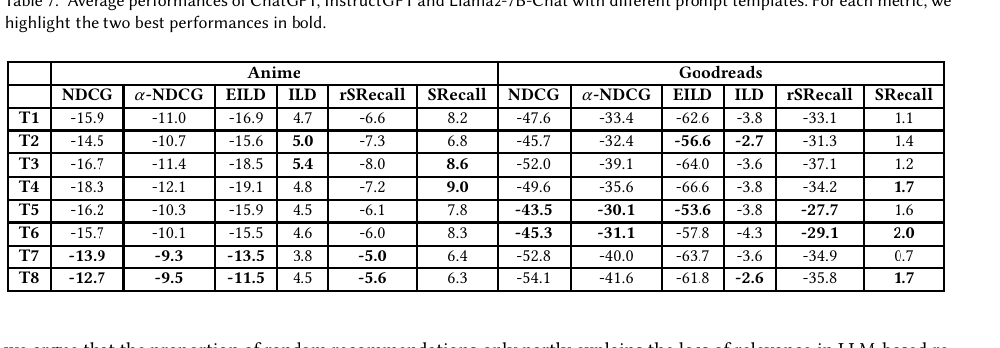
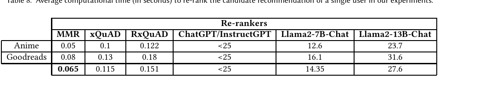
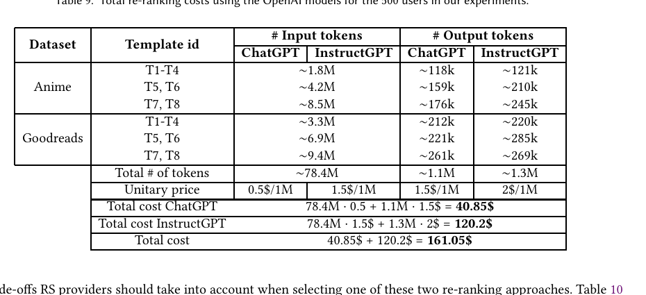
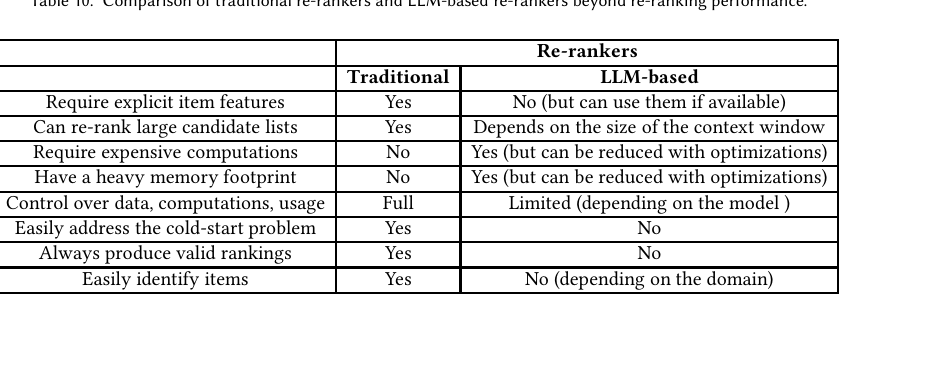

LLM-Diversity-Re-ranking
1. 基本信息
- 标题：Enhancing Recommendation Diversity by Re-ranking with Large Language Models
- 作者：Diego Carraro, Derek Bridge
- 机构：Insight Centre for Data Analytics, School of Computer Science & IT, University College Cork
- 时间：2024-06-17（arXiv v2）
- arXiv：https://arxiv.org/abs/2401.11506
- 代码：https://github.com/cdiego89phd/chat-reranking
- 本地 PDF：
C:\Users\chaol\Desktop\推荐论文阅读\re-ranking\LLM-Diversity-Re-ranking.pdf - 笔记位置：
论文笔记/重排/LLM重排/LLM-Diversity-Re-ranking.md - 分类：重排 / LLM 重排 / 多样性
2. Vault 内相关论文/笔记
- 推荐系统重排最新进展：该综述把本文放在 “LLM 多样性重排” 入口位置，适合先理解 LLM 是否真的能通过自然语言控制 diversity。
- 已检查现有重排论文笔记：本文没有显式引用或对照 CMR、AgenticRecTune，现有笔记也没有把本文描述为前置、后续或直接基线；因此不建立双向论文链接。
3. 一句话总结
本文把推荐多样性重排改写成 zero-shot prompt 任务，让 ChatGPT/InstructGPT/Llama2 从一个按相关性排序的候选列表 生成最终列表 ；结果说明 LLM 确实能做出强于随机的多样性重排，但在相关性-多样性权衡、速度、成本、无效输出和工程可控性上仍弱于传统贪心重排方法。
4. 引言：为什么研究这个问题
推荐系统不能只优化 relevance。用户最终看到的是一个列表，如果列表里全是相似物品，即使每个单品都相关，也可能无法给用户足够选择空间。多样性可以缓解推荐不确定性，避免同质化，也让用户更容易在不同兴趣方向里找到可接受选项。
已有推荐多样性方法很多，尤其是 post-processing re-ranking：先让基础推荐器生成一个较大的候选列表，再从中选出一个更短、更丰富的最终列表。本文的问题是：通用 LLM 是否能不用训练、只靠 prompt 理解 “re-rank for diversity” 这类任务？
作者提出四个研究问题：
- RQ1：LLM 能否理解重排和 item diversity 这些基本概念？
- RQ2：给定按相关性排序的候选列表，LLM 能否提高最终推荐列表的多样性？
- RQ3：不同 zero-shot prompt 模板会怎样影响 relevance 和 diversity？
- RQ4：LLM 重排和传统贪心多样性重排在性能、成本、数据控制、内存、泛化等方面如何取舍？
这篇论文的基调比较克制：它不是声称 LLM 已经能替代传统 reranker，而是系统验证 “可行但还不够好”。
5. 背景：传统多样性重排
论文先区分两类多样性方法：
- diversity modelling：在推荐模型训练目标里直接加入 diversity，例如修改 MF 或 pairwise LTR 目标。
- diversity post-processing：先由普通推荐模型生成候选，再用重排器平衡相关性和多样性。
本文聚焦第二类。传统贪心重排通常从候选列表 中逐个选 item 加入最终列表 。候选列表长度为 ，最终列表长度为 ，且 。每一步选择能最大化目标函数的候选：
这里 是 item 对用户的相关性， 是把 加入当前 后带来的多样性， 控制相关性和多样性的权衡。这个公式的隐藏条件是：基础推荐器给出的 排名足够可信，候选 item 的相似度或特征距离可被计算，且 能随着 逐步构造而更新。
作者用 MMR、xQuAD、RxQuAD 作为传统 baselines。MMR 更直接优化与已选 item 的不相似度；xQuAD/RxQuAD 则来自 intent-aware diversification，显式考虑 item feature/aspect 覆盖。
6. Section 3：用 LLM 做推荐多样性重排
6.1 初步验证：LLM 是否懂重排和多样性
正式实验前，作者先做了一个非严格的 preliminary study。Q1 让 ChatGPT 对 20 个 anime titles 做字母序、流行度、发行日期重排。字母序几乎正确，因为只看标题即可；流行度和发行日期需要模型内部知识，表现只达到部分一致，rank-biased overlap 大约在 0.5-0.8 和 0.35-0.7。
Q2 让 ChatGPT 判断两个 anime 列表哪个更 diverse，而且 prompt 中不定义 diversity。模型通常会自发采用 genre coverage 解释，并给出结构化理由。但在更难的例子里，它会把自己分配的 genre 和最终判断搞错，或与 ground-truth genres 不一致。
这个初步实验的意义不是给出严谨指标，而是说明 LLM 有继续被测试的价值：它大致知道 “多样性” 可理解为覆盖更多 genre，也能按指令输出列表，但正确性会随任务难度下降。
6.2 Prompt-based zero-shot reranking
正式方法把重排写成文本生成任务：输入是一个候选列表 ，输出是最终 top- 列表 。基础推荐器负责生成按相关性排序的 ；LLM 只负责从这个列表中重排并生成 。

Prompt 1 和 Table 1 是本文最核心的设计图表。Prompt 分三块：
- instruction：说明给定一个 ranked recommendation list，让 LLM 生成最终 top- 推荐列表，并用
{goal_string}控制目标。 - output format：强制输出
1-> item name这样的编号格式，方便解析。 - candidate list：把 逐项列出，并保留原始 rank。这个 rank 是 LLM 获得 relevance 的主要信号。
T1-T8 不是八个模型，而是八种 prompt 目标。T1/T4-T7 近似传统公式里的 ，意图平衡 relevance 和 diversity；T2/T3/T8 近似 ，更强调 diversity。T5-T8 是 feature-aware templates，会在 item 后附加 genres 或 plot summaries。作者把这类设计理解成一种离线准备好的 RAG-like prompt：不是推理时检索，而是提前把 item features/description 放进 prompt。
这里最容易误解的一点是：LLM 方法没有真正实现上面的 。它没有显式计算 、，也没有可控的 数值优化。它只是把 “balance relevance and diversity” 或 “maximize genre-based diversity” 写进自然语言，让 autoregressive LLM 逐项生成列表。作者认为这可以被视为一种粗糙的贪心重排，因为 LLM 也是 item-by-item 生成 ，但这个“贪心”没有传统算法的显式目标函数和可解释中间分数。
这个设定成立依赖几个条件：
- item 名称本身对 LLM 可识别，例如 anime、books、movies，比 SKU ID 更适合；
- 的原始编号能被 LLM 当成相关性提示；
- prompt 能容纳 个候选及其 features；
- 解析器能把 LLM 输出稳定映射回候选 item；
- 如果 LLM 生成不存在或不在 中的 item，系统必须有补救策略。
7. Section 4：实验设置
7.1 数据集与基础推荐器
作者在两个公开数据集上实验：
- Anime Recommendation Database：预处理后约 17M ratings、118k users、2.6k items、40 genres。
- Goodreads Book Graph：预处理后约 8M ratings、166k users、8k items、16 genres。
基础推荐器是 Matrix Factorization，使用 user-based 80/20 split 训练。每个数据集随机抽 500 个 test users。对每个用户，MF 先生成候选列表 ，且候选不包含训练集中已见 item。
实验 LLM 包括：
- OpenAI：InstructGPT
gpt-3.5-turbo-instruct，ChatGPTgpt-3.5-turbo-0613。 - Meta：Llama2-7B-Chat，Llama2-13B-Chat，自托管在两张 NVIDIA A40 48GB GPU 上。
最终推荐长度固定为 。候选长度 不是任意取小值，而是根据验证集里各 re-ranker 会从 取到的最低 rank 估计得到：Anime 为 ，Goodreads 为 。这比许多相近工作里的 或 更难，也更接近真实重排场景。
7.2 无效生成处理
LLM 输出会出现两类问题。轻微格式问题可以修复，例如额外解释文字、标题前后附加 genre 或描述、空格/标点差异。严重问题则不能安全修复，例如输出了不在 中的 title，或把 “Naruto” 写成候选里不存在的 “Naruto: Shippuden”。
作者的处理方式是：丢弃无法匹配的 invalid items；如果 不足 ，从 中随机补 item，直到 。他们没有选择重新调用 LLM，因为本研究想量化 invalid generation 本身的影响，而不是把它藏在重试策略之后。
这个决定会直接影响结果解释：random fill 会伤害 relevance，所以后面 Table 6 的无效生成比例不是工程细节，而是 LLM 重排性能差距的关键原因之一。
7.3 评价指标
相关性用 NDCG@10 汇报。多样性和相关性-多样性混合指标包括：
- -NDCG：同时考虑 relevance、aspect coverage 和 redundancy，作者设 。
- ILD：最终列表 item 两两距离平均值，距离用 genre 集合 Jaccard similarity 的补。
- EILD：只在 relevant items 子列表上计算 ILD。
- SRecall：最终列表覆盖了多少比例的 genres。
- rSRecall：只在 relevant items 子列表上计算 SRecall。
注意 EILD、rSRecall、-NDCG 都带有 relevance 成分，所以 LLM 如果为了多样性拿了很多低 rank item，会在这些指标上被明显惩罚。
8. Section 5：实验结果
8.1 主结果：强于随机，弱于传统重排

Anime 上，MF 的基线 NDCG 为 0.316。传统 re-ranker 只损失 4.6%-6.5% NDCG，其中 MMR 的 ILD 提升 12.6%，SRecall 提升 15.0%。ChatGPT 平均损失 10.1% NDCG，ILD 提升 4.7%，SRecall 提升 7.8%；InstructGPT 和 Llama 系列损失更大。
这说明 LLM 不是随机重排。Random 让 NDCG 掉 58.8%，而 ChatGPT 掉 10.1%，明显保留了部分 relevance。但它也没有达到传统重排的 trade-off，尤其在 -NDCG、EILD、rSRecall 这类 relevance-aware diversity 指标上更弱。

Goodreads 上差距更大。ChatGPT 的 NDCG 下降 33.4%，InstructGPT 下降 53.5%，Llama2-7B 和 Llama2-13B 接近 random。传统方法仍然相对稳健：MMR 只损失 4.7% NDCG，同时 ILD 提升 17.7%；xQuAD 的 -NDCG 提升 13.7%，SRecall 提升 10.0%。
作者给出的一个解释是 Goodreads 更容易触发无效生成：书名更长、更相似，prompt 也更长。Anime 上 LLM 内部知识可能更有效，而 Goodreads 上 title 匹配和语义辨识更难。
8.2 为什么 LLM 落后

Table 5/6 是解释主结果的关键证据。Table 5 统计最终 中被选 item 在候选 里的最低 rank，数值越大说明模型越会从更靠后的候选里拿 item。Anime 上 MMR/xQuAD/RxQuAD 大约取到 rank 16-21，而 Llama2-13B 到 28.9；Goodreads 上 LLM 更严重，Llama2-13B 到 43.1。
如果假设 的原始排序确实代表 relevance，那么从更靠后位置拿 item 会天然损失 NDCG。这是 LLM 为了追求 diversity 但没有显式 relevance 约束时的代价。
Table 6 说明另一个问题：随机补位比例在 Anime 是 2.3%，Goodreads 是 13.1%；按模型看，InstructGPT 最低 1.2%，ChatGPT 3.0%，Llama2-7B-Chat 高达 18.9%；按模板看，T7/T8 这种 plot summary 模板最容易出问题，分别 18.0% 和 22.4%。所以 feature-aware prompt 可能提供更有用的语义，也可能因为输入更长、更复杂而增加 invalid generation。
作者总结 LLM 弱于传统重排的三个原因：
- LLM 更常从 低 rank 位置选 item，损失 relevance。
- invalid generation 需要随机补位，进一步伤害 relevance。
- xQuAD/RxQuAD 显式使用 user profile 和 item genres 来估计 aspect probabilities，而本文 LLM prompt 没有用户画像，只靠候选 rank 和 item 文本推断 relevance/diversity。
8.3 Prompt 模板和模型差异

Figure 1 展示 Anime 上不同模板和 LLM 的指标变化。横轴是 T1-T8，颜色是 ChatGPT/InstructGPT/Llama2-7B-Chat，纵轴是相对 MF 的百分比变化。重点不是记住每根柱子，而是看波动：不同模板对不同指标影响很大，而且 “设计上该平衡 relevance/diversity” 的模板不总是按预期表现。

Figure 2 显示 Goodreads 上 degradation 更明显，尤其 NDCG、-NDCG、EILD、rSRecall 都大幅下降。SRecall 有小幅提升，但相关性代价很高。这与前面 Table 6 的无效生成比例、Goodreads 更长标题和更长 prompt 相互呼应。

Table 7 把 prompt 模板效果汇总到平均值。作者的结论有三点：
- 没有一个全局最佳模板；模板设计需要按 LLM、领域和指标调。
- T1/T4-T7 设计上是 平衡，T2/T3/T8 设计上是 强调 diversity，但结果不总是符合设计意图。
- T5-T8 这类 feature-aware templates 平均更有帮助，说明 LLM 能利用额外 item features；但它们也更容易产生 invalid outputs，尤其 T8。
模型层面，ChatGPT 整体最好，InstructGPT 次之，Llama2-7B 和 Llama2-13B 更弱。论文特别指出 Llama2-13B 比 Llama2-7B 差有点反常，因为同家族模型通常更大更强；作者猜测 alignment 差异可能是原因，但没有进一步证明。
9. 成本与工程权衡
9.1 推理时间和 API 成本

Table 8 显示传统 re-ranker 的速度优势非常大。MMR/xQuAD/RxQuAD 平均只需要 0.065、0.115、0.151 秒；Llama2-7B 平均 14.35 秒，Llama2-13B 平均 27.6 秒。OpenAI API 因为作者遇到服务不稳定，实验中用了 25 秒 sleep，因此表里是 <25 的上界，不是精确延迟。

Table 9 给出 OpenAI API 成本。500 个用户、两个数据集、八种模板的实验总成本约 161.05 美元，其中 ChatGPT 约 40.85 美元，InstructGPT 约 120.2 美元。Goodreads 和 T7/T8 更贵，因为标题和 plot summaries 更长，输入 token 更多。结合性能看，ChatGPT 同时比 InstructGPT 更便宜且效果更好。
9.2 超出指标的取舍

Table 10 是 RQ4 的总结。传统重排需要显式 item features，但可以处理大候选列表，计算和内存轻，数据与推理完全可控，输出一定有效，也能自然处理冷启动，只要新 item 有 features。
LLM 重排的潜在优势是：不一定需要人工定义 features，可以利用预训练中隐含的物品知识和跨域关系；如果加入 features/description，也能从 richer context 中受益。但这些优势伴随几个硬限制：
- context window 限制候选列表长度；
- GPU/内存/推理时延成本高；
- proprietary API 会带来数据上传、服务可用性、速率限制和隐私控制问题；
- 新 item 可能不在模型知识中，冷启动需要 RAG 或额外描述补充；
- 输出不保证合法，解析和纠错很难覆盖所有 corner cases；
- 依赖 item title/name，可识别性在 SKU、社交对象、短文本流等场景会变差。
我的理解是，这张表给出的现实建议很明确：在高吞吐、低延迟的工业主链路上，本文这种直接 LLM rerank 不适合线上 serving；更合理的使用方式可能是小候选、高价值、强语义场景，或让 LLM 离线生成偏好信号、训练数据和 prompt/feature 设计，再蒸馏给轻量 reranker。
10. 结论与局限
论文结论可以压缩成三句话：
- 通用 LLM 可以理解多样性重排，结果强于随机重排。
- 当前 zero-shot LLM 重排仍不如传统贪心方法，尤其在 relevance-aware metrics、速度、成本、有效输出率上差距明显。
- prompt、item features、模型能力和领域难度都会强烈影响结果，未来需要更强模型、更好 prompt、few-shot/CoT/RAG、重试或更强解析，以及专门 SFT/RLHF/distillation。
作者也承认实验局限：只用了两个数据集、500 个测试用户、有限 prompt 和有限模型；confidence intervals 对很多指标较宽；用 genre-based diversity 只是 diversity 的一种定义，没有覆盖 novelty、serendipity 或基于 rating/embedding 的 item distance。
11. 记忆锚点
- 本文是 “LLM 能不能做 diversity reranking” 的早期系统验证，不是强工业方案。
- 方法本质：把 写成 zero-shot 文本生成，用 prompt 里的自然语言模拟 权衡。
- 成功信号：LLM 输出强于 random，说明它确实在理解任务，不只是打乱列表。
- 失败信号：LLM 更容易拿低 rank item、产生 invalid items、缺少用户画像和显式 feature probability，因此 relevance-aware metrics 输给传统方法。
- 工程结论：直接 LLM rerank 成本高、慢、不稳定；更可能适合离线信号生成、强语义小流量场景或蒸馏到轻量模型。
12. 图表覆盖检查
- 方法设计：Prompt 1 与 Table 1 已解释并嵌入。
- 主结果：Table 3、Table 4 已解释并嵌入。
- 失败原因：Table 5、Table 6 已解释并嵌入。
- 模板分析：Figure 1、Figure 2、Table 7 已解释并嵌入。
- 成本与工程权衡：Table 8、Table 9、Table 10 已解释并嵌入。